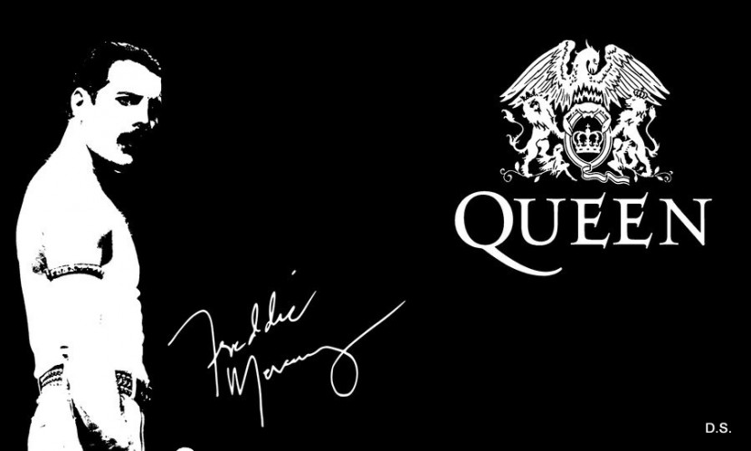
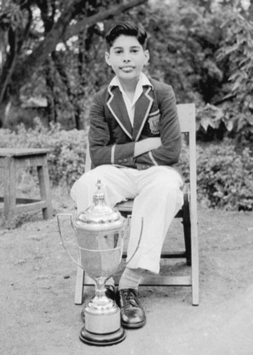
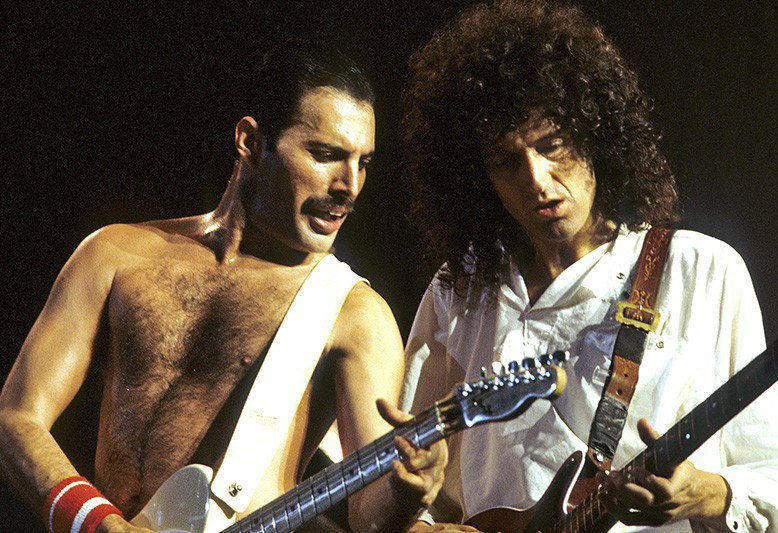

Фре́дди Ме́ркьюри (англ. Freddie Mercury, имя при рождении — Фарру́х Булса́ра (гудж. ફારુખ બલસાા);
5 сентября 1946, Каменный город, Занзибар — 24 ноября 1991, Лондон, Великобритания) — британский певец парсийского происхождения, автор песен, вокалист рок-группы Queen. Был автором таких хитов группы, как «Bohemian Rhapsody», «Killer Queen», «Seven Seas of Rhye», «Somebody to Love», «We Are the Champions», «Crazy Little Thing Called Love» и др. Также музыкант занимался сольным творчеством.- 
Детство и юность (1946—1964)
Фредди Меркьюри родился 5 сентября 1946 года в Каменном городе — старейшем районе города Занзибара на одноимённом острове в семье парсов из Гуджарата — Боми (14.12.1908 — 25.12.2003) и Джер (29.09.1922 — 13.11.2016) Булсара. При рождении мальчик получил имя Фаррух, что значит «прекрасный», «счастливый». Его отец работал кассиром при Верховном суде Англии и Уэльса; его фамилия — Булсара — произошла от названия небольшого городка к югу от Бомбея В 1952 году у Фарруха появилась сестра Кашмира. В 1954 году родители отправили 8-летнего Фарруха в Индию, в школу Св. Петра города Панчгани, что в 150 километрах от Бомбея. Фредди не нравились крикет и бег на длинные дистанции — он предпочитал хоккей на траве, спринт и бокс. В десять лет он стал чемпионом школы по настольному теннису, в двенадцать лет получил кубок за победу в юношеском многоборье, а также грамоту «за преуспевание во всех науках и искусствах». Фредди проявлял интерес к музыке и живописи, постоянно делал рисунки для друзей и родственников. Также он пел в школьном хоре и участвовал в постановках спектаклей. С ранних лет увлекался музыкой, пением, иногда в ущерб занятиям. На музыкальные способности Фредди обратил внимание директор школы Св. Петра. Он написал письмо родителям мальчика, в котором предложил организовать для Фредди курсы игры на фортепиано за небольшую плату. Родители согласились, и Фредди начал с увлечением учиться. По окончании обучения он получил четвёртую степень по теории и практике (англ. Piano Grade IV). В 1958 году пятеро друзей из школы Св. Петра — Фредди Булсара, Деррик Бранш, Брюс Мюррей, Фаранг Ирани и Виктор Рана — создали свою первую рок-группу, которую они назвали The Hectics (рус. Чахоточные). Группа играла в основном рок-н-ролл на школьных вечерах, танцах и юбилеях. В 1962 году 16-летний Фредди, завалив выпускной экзамен, покинул школу Св. Петра в Панчгани и вернулся на Занзибар. В начале 1964 года британское правительство передало власть над Занзибаром арабскому султану, и через неделю после этого Занзибар был провозглашён независимым государством. В связи с политическими беспорядками в стране семейство Булсара, захватив всего лишь два чемодана с одеждой, улетело в Великобританию.
- 
Queen (1970—1991)
Группа была переименована в «Queen». Уже в следующем году Queen выступала на разогреве у Yes. После того, как состав группы стал постоянным, Фредди решил нарисовать её герб. По одной из версий, за основу был взят герб Великобритании, с латинской буквой Q, вокруг которой «вплетены» зодиакальные знаки членов Queen: два Льва — Джон Дикон и Роджер Тейлор, краб, вылезающий из огня — знак Рака — Брайан Мэй. Две феи с крыльями — добрые помощницы для героев из британского эпоса (также зодиакальный знак Фредди — Дева). Фредди стал автором первой песни Queen, попавшей в британские чарты — «Seven Seas of Rhye» (1973). Он же сочинил первый хит группы — «Killer Queen» (1974), а также самую успешную композицию Queen — «Bohemian Rhapsody». Песне пророчили провал из-за её слишком большой по меркам того времени продолжительности для сингла и для проигрывания на коммерческих радиостанциях (5:55) и смешения нескольких стилей и жанров музыки. Но Queen выпустили песню в качестве сингла, сняли к ней видеоклип, который стал революцией в музыкальных видео, некоторые даже называют его «первым видеоклипом», хотя клипы к песням снимались и раньше. Песня продержалась на вершине британского хит-парада девять недель. Меркьюри понимал её эксцентричность и наслаждался этим: В определённый момент мы понимаем, что нам хочется перейти границы дозволенного. Это и заставляет нас двигаться вперёд. Если мы выпустим очередной альбом, а люди послушают его и скажут: «Он похож на Sheer Heart Attack, но всё же Sheer Heart Attack немного лучше», я всё брошу. Правда, я так и сделаю. Альбом Barcelona вышел 10 октября 1988 года. Заглавная песня альбома, «Barcelona» стала одним из двух гимнов Летних Олимпийских игр в Барселоне 1992 года(вторым стала песня «Amigos Para Siempre» Эндрю Ллойда Уэббера и Дона Блэка в исполнении Сары Брайтман и Хосе Каррераса).